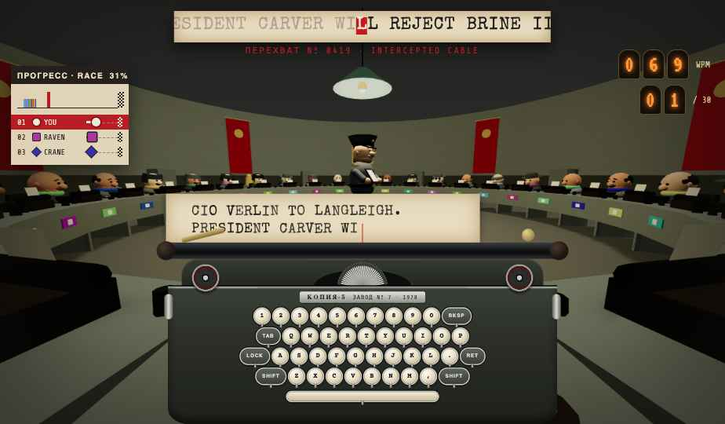
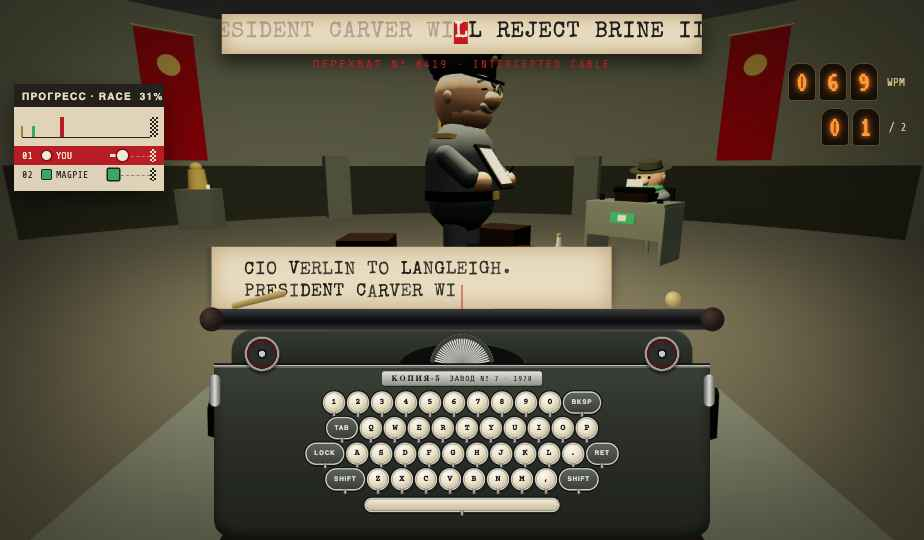
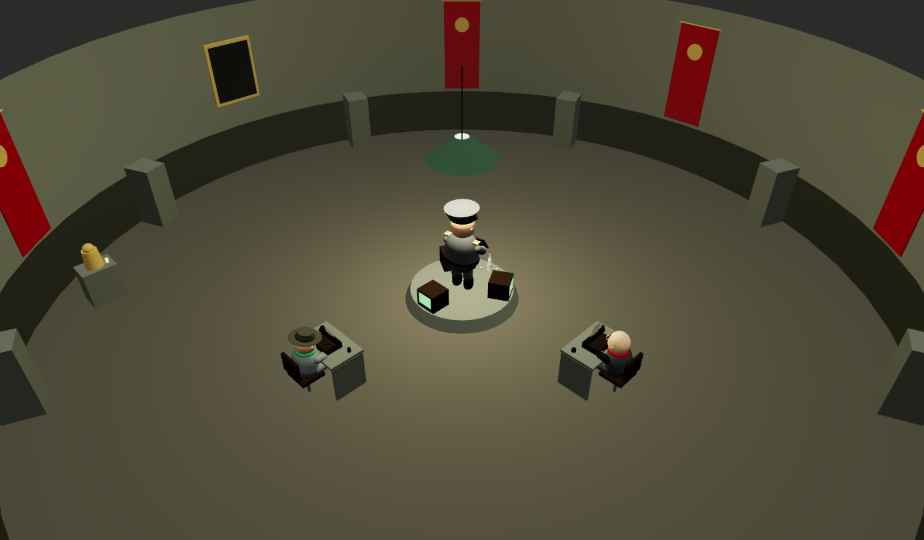
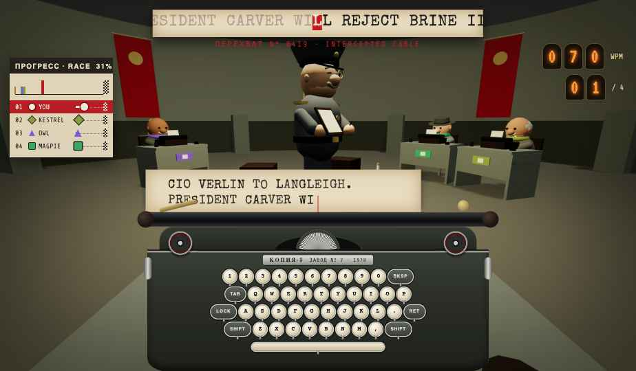
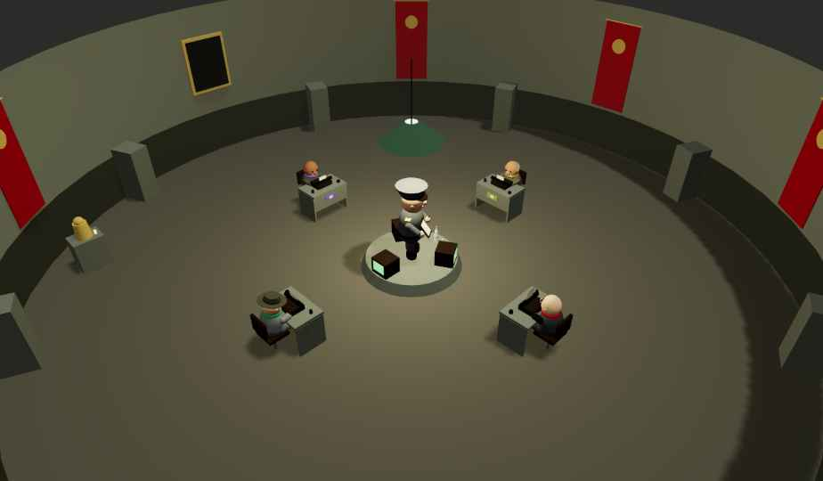

OFFICIAL ART DIRECTION · REV. 1 · OCTOBER 2026
A typing race set in a toy-sized Soviet ministry, 1978. It is printed in red ink on cream paper, and everyone in the room types the same message.
FIFTH COPY · ART DIRECTION01
01THE IDEA
One message arrives. Thirty typists copy it at the same time. Whoever finishes their copy first wins the medal.
TOY-SIZED BUREAUCRACYBig heads, mitten hands, oversized caps. The system is enormous and the people are small and funny. It is never grim.
PRINTED, NOT GLOWINGFlat ink on paper, slight misregistration, halftone grain. Light comes from the room, not from the UI. Glow lives only inside tubes and CRTs.
RED IS THE SYSTEMRed marks authority, urgency and you. Ribbon violet marks rivals and text still to type: everything that is not yours yet.
Period details stay: papirosa smoke, ashtrays, vodka on the Major's desk, war-scare headlines. They are historical set dressing, not gags. The tone is a deadpan cartoon of office life.
FIFTH COPY · ART DIRECTION02
02MOODBOARD
★ Main reference → steep diagonal bands, rotated type, stars, sunburst
Round table → ring layout
Army medal → podium reward
General outfit → the Major
Character inspiration → typists
FIFTH COPY · ART DIRECTION03
03PALETTE
AGIT RED#B81D24
headers, primary action, you
BANNER#7E1015
depth of red, bands, pressed
RIBBON VIOLET#3E3A78
rivals, text still to type
MEDAL GOLD#E2B23A
rewards and bests only
PAPER#F1E8D6
main ground
NEWSPRINT#E4D6B8
panels, cards, walls
BACKROOM GREY#6F736C
3D room: walls, desks, steel
PRESS INK#2A2420
type only, never panels
COVERAGE ON UI SCREENS · in the 3D room the only red is the flags
paper 55%red 28%ink 10%violet 5%gold 2%
NIGHT
Dark theme, "Night shift": Paper becomes #1E1B2E (carbon night) and Newsprint becomes #2B2740. The reds and gold stay the same, and ink becomes Paper. Same rules, inverted ground.
86
Tube colours (phosphor #5CFF8A, nixie #FF9A3C) appear only inside physical devices: CRTs, nixie counters, indicator bulbs. Never on UI panels.
FIFTH COPY · ART DIRECTION04
043D RENDER · POV & HIGH VIEW
POVYour seat

Framing. Seated eye height, 62° FOV. The Major sits dead centre across the ring, your red sleeves in the bottom corners.
3D vs HTML. Room, typists, officer and typewriter body are WebGL. Telex strip, sheet, keys and counters are an HTML layer, so text stays sharp.
Race lines. Top-left docket: the whole field on one line (you in red), lanes for top 3 and the 2 around you. OVERTAKE / PASSED stamps on every change. Each rival has a muted colour + marker shape + desk number, repeated on their 3D placard and scarf.
HIGH VIEWThe Ring
Layout. 30 desks in one ring, all facing in, the Major on a turning platform at the centre. Bigger lobbies add raised tiers behind the ring.
Colour blocking. Grey everywhere: dirty concrete, grey-green walls, grimy wainscot, dull steel. The only red in 3D is the flags.
Use. Projector and spectator camera. Slow orbit; rank plaques float above heads.
FIFTH COPY · ART DIRECTION05
053D RENDER · SMALL LOBBIES

2 PLAYERS · YOUR SEAT
2 PLAYERS · OVERVIEW (90°)
4 PLAYERS · YOUR SEAT
4 PLAYERS · OVERVIEW (EVEN)
Each seat is staged for its owner. Up to 13 players, every client re-seats the rivals across the room, left and right of the Major and never behind him, so you always see all of them.
Overview tells the truth. Projector and spectators see even spacing (2 players: 90° apart). The camera is offset so no desk hides behind the Major.
FOV grows with the lobby. The POV widens (62° → 100°) until every rival fits. Above 13, the real ring is used and the FOV opens toward 84°. Race card: all lanes up to 8, then top 3 + the 2 around you.
LIGHT
A dim, cool backroom with one dirty bulb over the Major that hums and stutters off at random. Dark but always readable, fog past the ring.
SHADING
Flat Lambert, slightly chalky, like painted wood toys. No glossy PBR except on brass and glass.
PROPS
Typewriters, ink stamps, ashtrays, samovar, vodka + shot glasses, CRTs, filing cabinets, portrait frame.
BUDGET
~50–75k tris, ~190–320 draw calls today. Target: instanced typists, ≤ 60 calls.
FIFTH COPY · ART DIRECTION06
06TYPOGRAPHY
HERO OF PAPERWORK
Display · Stardos Stencil 700
Titles, stamps, medals. All caps, +4–10% tracking. Stamps rotate −6° to +6°.
SHIFT 142 · 02:30 · PLACE 04 / 30
Labels · Oswald 600
Section labels, dockets, buttons. All caps, +16–24% tracking.
« Où est le café ? » Déjà 4 h 30 ; dépêche-toi !
Typing text · IBM Plex Mono
The only face students type from. Mixed case, clear accents, 28–36px. Done = ink, next = red cell, remaining = ribbon violet at 55%.
ASSET NIGHTINGALE MEETS AT 0400.
Flavour · Special Elite
Story cards, intercepted-cable headers, quotes. Never for text to type.
At dawn, the Major pins a medal on the fastest typist. The slowest is sent to sort files in the basement.
Body · Courier Prime 400/700
Rules, descriptions, stats copy. 15–18px, line-height 1.5–1.6.
Devices · VT323
Only inside nixie tubes and CRTs. Numbers only.
FIFTH COPY · ART DIRECTION07
07LOGO
Wordmark. "FIFTH" in stencil, "COPY" knocked out of a bar slanting up at 8°. The bar is always the second colour: red on paper and night, ink on red.
Icon: FC monogram. The wordmark in two letters: stencil "F" on top, "C" knocked out of the same 8° bar. It reads as Fifth Copy even at 16px.
Rules. Tagline only when there's room. Never recolour the bar violet or gold, never straighten it, and keep clear space of one bar height around the mark.